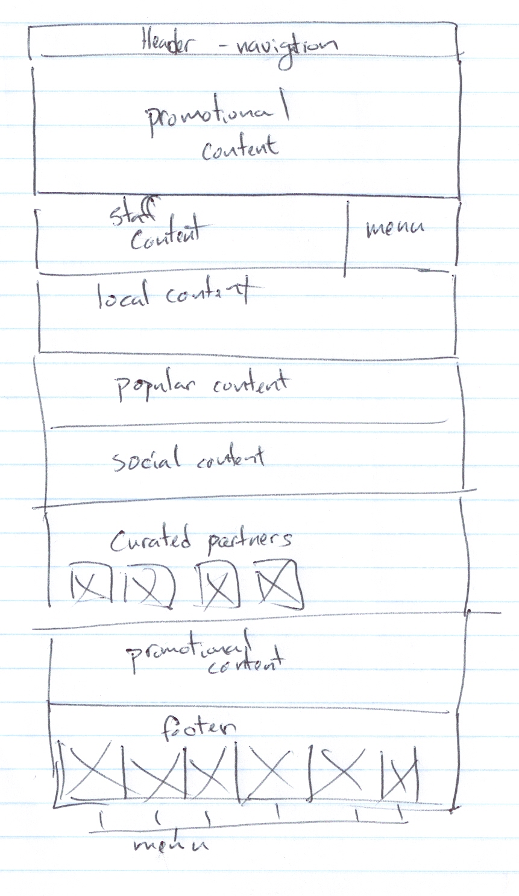

Jeremy's anaylsis of websites with wireframing
Wireframing
NPR Website
NPR Website
The first website I've chosen is from NPR. Their website layout is very readably and easy on the eyes with a lot of negative space. The relevent content of this page is on the left hand side where the article starts in a visually appealing box. With these visual cues, it solves the problem of the viewer wandering off onto other content on other sites. However, if the right column content is too alluring, like different colors or unique content, focus will turn away from the article.
Metafilter Website
Metafilter Website
The next website is Metafilter. This website's main problem is to try to fit in the newest stories of today on their front page without making it look cluttered. The color choice of the text, background, and choice of text spacing is important here, and the site makes use of a lot of negative space to compensate for all of this text you look at here. The biggest problem is paragraph width that seems to take the entire browser, so you'll have to scan through the one end of the window to the other without breaks, which could be bad if there's an entire paragraph of text in the post.
Kickstarter Website
Kickstarter Website
 The last website is Metafilter. Their website is very minimlistic because there's a lot less content I'm looking at. There's the navigation bar at top that is seemless with the promotional content below it. The problem this website addresses is the use of space and what the viewer will look at when they first land on this page.
 Facebook
Facebook Twitter
Twitter© 2014 Craft By Zen Company. All Rights Reserved.